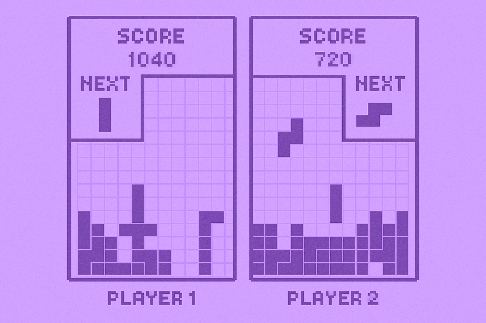

Why choose one path when you can explore them all?
I've always been drawn to a whirlwind of interests, from martial arts and culinary arts to the elegant complexity of mathematics. While some believe in mastering a single craft, I've found strength in versatility, in connecting ideas across disciplines to create something greater than the sum of their parts.
I'm currently pursuing a Double Major in Computer Science and Finance at the University of Waterloo, with Minors in Statistics and Computational Mathematics. My studies bridge analytical precision with creative problem-solving, spanning everything from Algorithm Design and Data Structures to Microeconomics and Financial Modeling.
My passion lies at the intersection of technology, data, and finance, where logic meets innovation. Whether I'm building intelligent systems, optimizing financial models, or exploring new technologies, I'm driven by curiosity and the pursuit of ideas that challenge convention.
Bachelor of CFM, Computer Science and Finance (Double Major)
Minors: Statistics and Computational Mathematics
Honours & Co-operative Program
Relevant Coursework: Data Structures & Algorithms, Object-Oriented Programming, Probability & Statistics, Regression & Forecasting, Financial Data Analytics, Linear Algebra, Calculus, Logic & Computation
• Recipient of the 10-year UAE Golden Visa as an "Outstanding Student" (2023 - 2033)
• School Top Scorer (98.4%) - AISSCE (Grade 12)
• Subject Top Scorer - Mathematics (99%), Computer Science (100%), English (99%), Chemistry (99%)
• School Parliament Member
• Literary Secretary
University of Waterloo, Waterloo, Ontario
• Conducted research on lossless data compression using large language models, applying autoregressive token prediction and RAG to improve efficiency while minimizing storage requirements.
Financial Services Regulatory Authority of Ontario (FSRA), Toronto, Ontario
• Automated the Pension Plans Screening Tool using a Python + SQL pipeline, consolidating data from 3,900+ pension plans and replicating risk scoring, enabling real-time data-driven insights.
• Developed a dashboard for cross-functional teams, improving efficiency, data quality, and scalability of risk analysis for actuarial and regulatory decision-making.
CodingPlusOne
• Designed and delivered comprehensive programming curriculum for students aged 8-16, teaching Python fundamentals and Scratch visual programming to develop computational thinking and logical reasoning skills.
FinTech Lab, Kitchener, Ontario
• Evaluated and benchmarked 9+ APIs, improving overall system performance, ensuring interoperability across platforms, and strengthening data engineering and analytical expertise.
• Integrated, transformed, and analyzed datasets from Google Analytics APIs, generating actionable insights that improved reporting accuracy and directly supported data-driven decision-making.
InvestAlice, Toronto, Ontario
• Designed and developed an expense analyzer prototype using JavaScript, React, and Tailwind CSS, enhancing data visualization and user interfaces.
• Conducted research to identify suitable AI technologies for financial services and analyzed competitors' AI implementations to benchmark and innovate solutions.
Python, C, C++, SQL (MySQL, PostgreSQL), R, Java, JavaScript, Bash, Shell Scripting
scikit-learn, statsmodels, Pandas, NumPy, Matplotlib, Seaborn, NLTK, Streamlit, yfinance, PyTorch, TensorFlow
React, Next.js, Node.js, Flask, Jupyter Notebook, Microsoft Azure, Git, Linux, Power BI, Power Automate, Figma, Microsoft SQL Server, Copilot Studio, Excel
• Microsoft Certified: Azure AI Fundamentals (AI-900)
• Microsoft Certified: Azure Fundamentals (AZ-900)

Game Logic Design and Development
Portfolio Optimization Strategy Development
Platform Optimization Challenge
Personalized Meal Planning System Development
Traffic Optimization and Analysis
Risk Analysis with Public Market Data
NLP-Based Recommendation Engine
Real Estate Market Analysis
AI-Driven Storytelling Platform
Financial Portfolio Analysis
"I was consistently impressed by her resourcefulness and dedication. Nyra consistently delivered to the expectations and took ownership of her projects, ensuring their successful completion.
I highly recommend Nyra for any role as she is multi-talented. She is a motivated and adaptable individual who will undoubtedly make significant contributions to any organization."
Founder of FinTech Lab
"Beyond academics, Nyra proved herself to be an outstanding all-rounder. She took on leadership roles with zeal, serving as a school parliament member and literary secretary.
Her ability to balance her academic responsibilities with her extracurricular commitments is a testament to her exceptional time management skills and leadership qualities."
Computer Science Teacher
"Nyra demonstrated exceptional technical expertise, analytical acumen, and a collaborative spirit that significantly contributed to our team's success. Beyond her technical and interpersonal skills, Nyra displayed a strong commitment to continuous learning and professional growth.
Her initiative in seeking feedback and refining her skills underscored her dedication to excellence."
Director of PBGF and Strategic Transformation